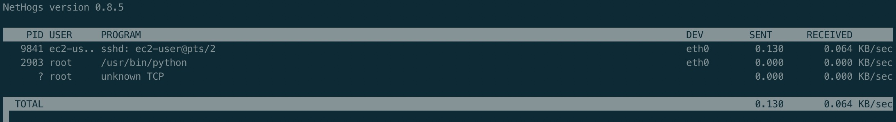
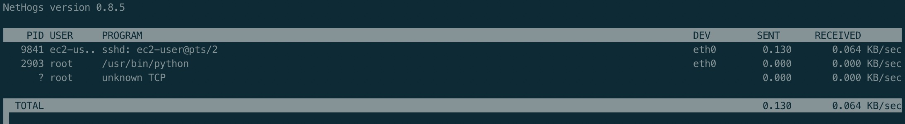

NetHogs是一个小型的’net top’工具,不像大多数工具那样拖慢每个协议或者是每个子网的速度而是按照进程进行带宽分组.NetHogs NetHogs不需要依赖载入某个特殊的内核模块. 如果发生了网络阻塞你可以启动NetHogs立即看到哪个PID造成的这种状况.这样就很容易找出哪个程序跑飞了然后突然占用你的带宽.
命令 nethogs
安装
1 | # centOS |
使用
1 | nethogs |

NetHogs是一个小型的’net top’工具,不像大多数工具那样拖慢每个协议或者是每个子网的速度而是按照进程进行带宽分组.NetHogs NetHogs不需要依赖载入某个特殊的内核模块. 如果发生了网络阻塞你可以启动NetHogs立即看到哪个PID造成的这种状况.这样就很容易找出哪个程序跑飞了然后突然占用你的带宽.
1 | # centOS |
1 | nethogs |
